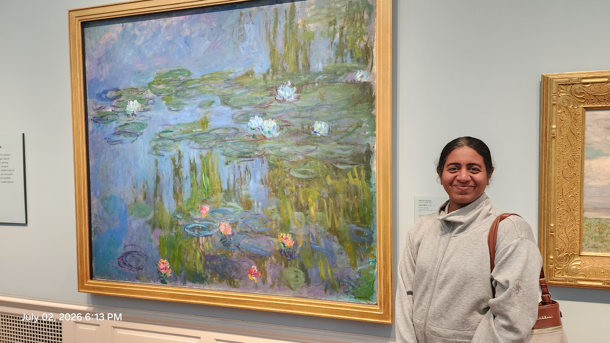

After two floors of Hockney (read that story here), I moved into the museum's other galleries — 15th-century oil paintings, pointillist landscapes of old Portland rendered almost like little rectangular dots, and a real Claude Monet, one of his water lily paintings. Once I realized it was an actual original, not a print, I had to get a photo with it.
I ended the visit with the two rooms that stayed with me most: the Asian wing and a table of tactile art.
The Asian wing was Korean and Japanese work. A Korean folding screen, Sun and Moon, Birds and Flowers, embroidered in silk from the royal court tradition, sat near small Korean treasure chests — a box for combs, a jewelry organizer with a mirror, a big chest with tiny drawers, one with a little keyhole just the right size for a key. None of it was fancy, exactly, but every piece was so good to look at. Then there was a heron and lotus painting on silk that stopped me completely — Herons and Lotus, painted in 1830 by a Japanese artist named Takahashi Sōhei, who died at only thirty-three. I just wanted to learn how to make something like it. Bamboo washes, landscape washes nearby, all of it so beautiful it felt like it was calling me to sit down and try.
Two more paintings stayed with me from that stretch. Sharon Bronzan's Red Thread and My Foolish Heart — two women surrounded by flowers and butterflies, painted after her own family history. The placard said her Evangelical Swedish grandmother read fortunes in coffee grounds, while her Catholic Croatian grandmother filled her house with religious icons for protection — and Bronzan carries both grandmothers' faith and ritual into how she paints, building each canvas in eight layers of gouache over black gesso. And Sherrie Wolf's oil painting of fruit — kiwis, grapes, pears, a black vase and plate reflecting a print of a Caravaggio boy with a basket of fruit — was mind-blowing. In her own words on the placard: "I included a reference to Caravaggio's painting of Bacchus reflected in the mirror as a metaphor, looking back at my artistic influences, contrasting the past and present realities. Multiple reflections in the vase offer another view of the surrounding world and layer of intrigue." It's become study material for me now, the same way the sunflower was. It called to me to sit with it and actually learn from it, not just admire it.
And then, the tactile art table — art made for blind and low-vision visitors. I had never seen anything like it. There was a raised, textured reproduction of a vintage Grateful Dead concert poster — the skeleton and roses — with its title in Braille beside it. A watermelon sculpture with a bite taken out of it, sitting next to the word "liberation." Paper prints of a gorilla, a camera, a mountain, all built from raised dots, more dots used for shading and depth, so your fingers could read the image the way your eyes read a photograph. I took the printed materials home to study more. I'd never experienced art that way before — through touch instead of sight. It changed something in me. I keep thinking about how many kids have never had an art lesson built for the way they actually experience the world, and I want to make one.
We only left because the museum was closing. We walked out with two books, a Perpetua pencil from Italy for my teen (she's already using it constantly), and happy, tired memories.
I came home dipped in curiosity. The museum felt like a whole day folded into a few hours — so much information, so much to remember. I'm writing all of it down now so none of it fades: an artist I didn't expect to love and left thinking about anyway, a heron and lotus and a landscape ink wash on silk I want to paint myself, a fruit still life that's become study material, two grandmothers I never met still shaping a stranger's paintings decades later, and a table of tactile art that gave me an idea I can't put down.